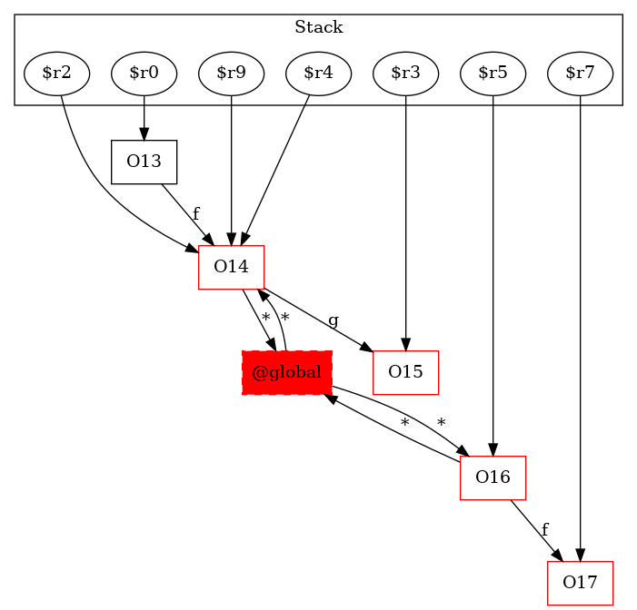

13 : $r0 = new testcase.Test1Node
13 : specialinvoke $r0.|testcase.Test1Node: void |init|()|()
14 : $r2 = new testcase.Test1Node
14 : specialinvoke $r2.|testcase.Test1Node: void |init|()|()
14 : $r0.|testcase.Test1Node: testcase.Test1Node f| = $r2
15 : $r4 = $r0.|testcase.Test1Node: testcase.Test1Node f|
15 : $r3 = new testcase.Test1Node
15 : specialinvoke $r3.|testcase.Test1Node: void |init|()|()
15 : $r4.|testcase.Test1Node: testcase.Test1Node g| = $r3
16 : $r5 = new testcase.Test1Node
16 : specialinvoke $r5.|testcase.Test1Node: void |init|()|()
17 : $r7 = new testcase.Test1Node
17 : specialinvoke $r7.|testcase.Test1Node: void |init|()|()
18 : $r5.|testcase.Test1Node: testcase.Test1Node f| = $r7
19 : $r9 = $r0.|testcase.Test1Node: testcase.Test1Node f|
19 : staticinvoke |testcase.Test1: void bar(testcase.Test1Node,testcase.Test1Node)|($r9, $r5) -> class soot.jimple.internal.JInvokeStmt
20 : $r10 = $r5.|testcase.Test1Node: testcase.Test1Node f|
20 : return $r10
